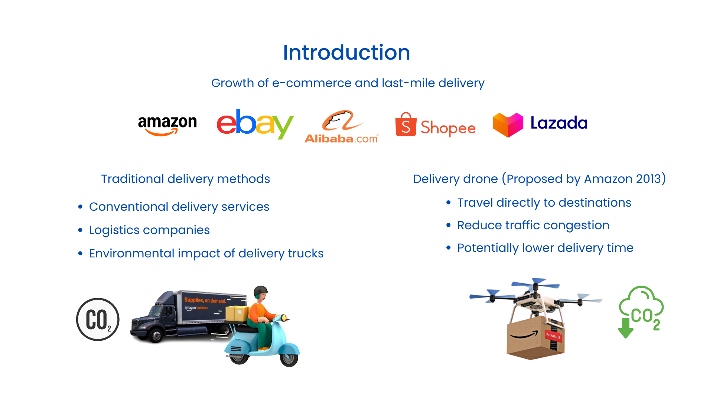
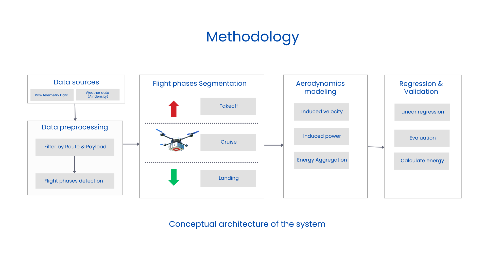
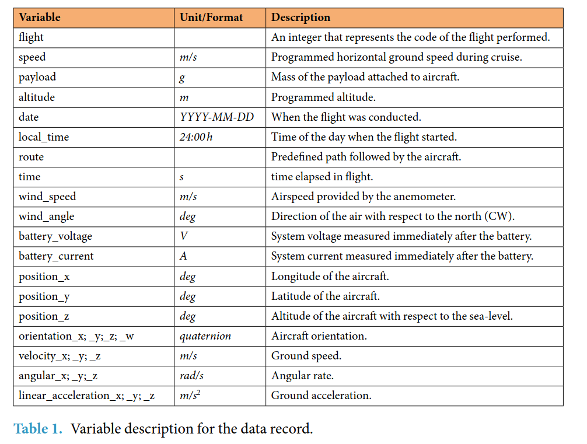
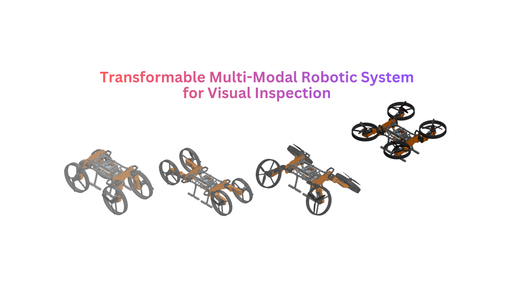
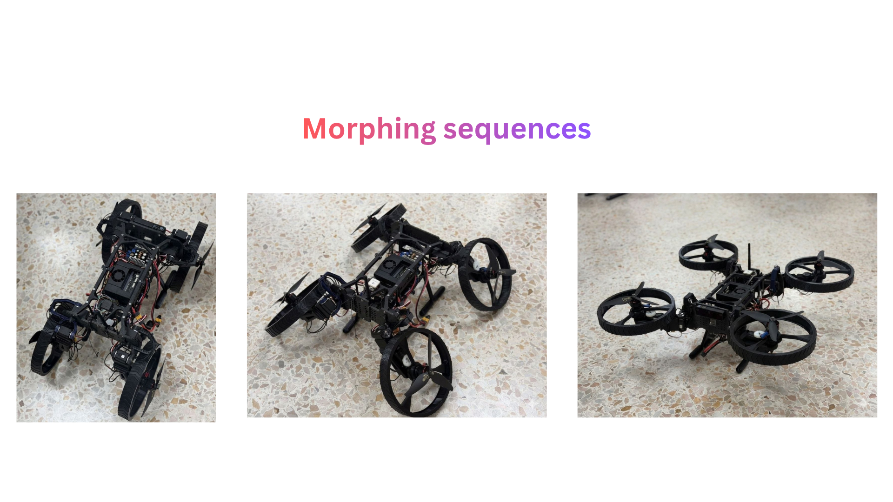
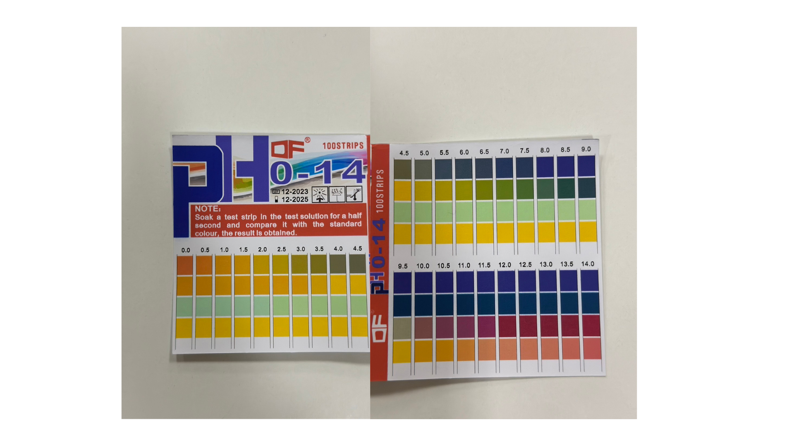
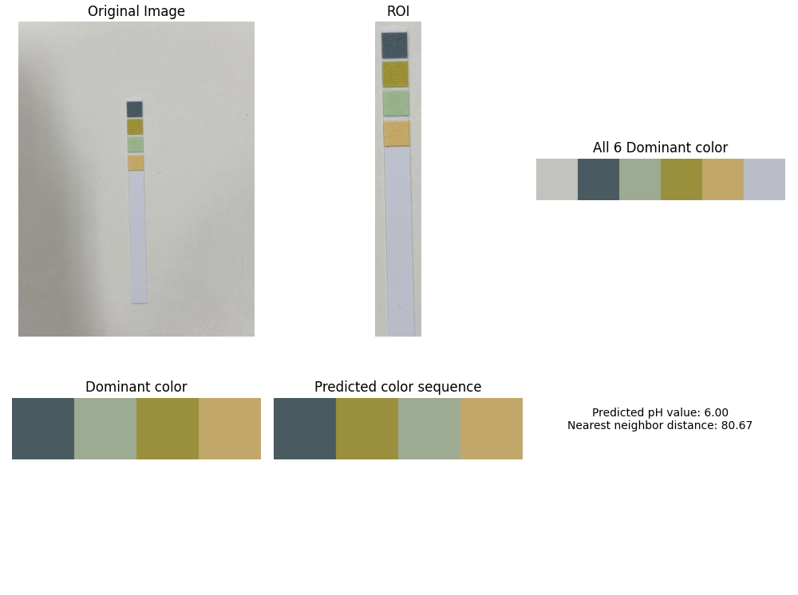
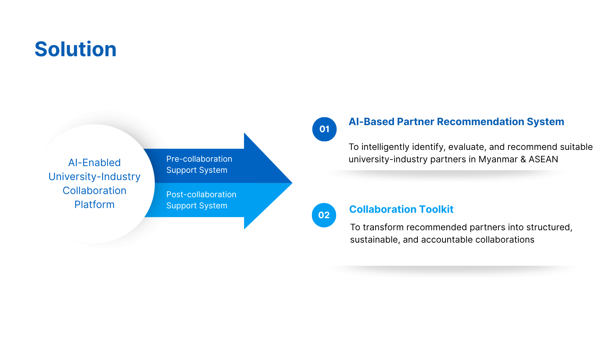
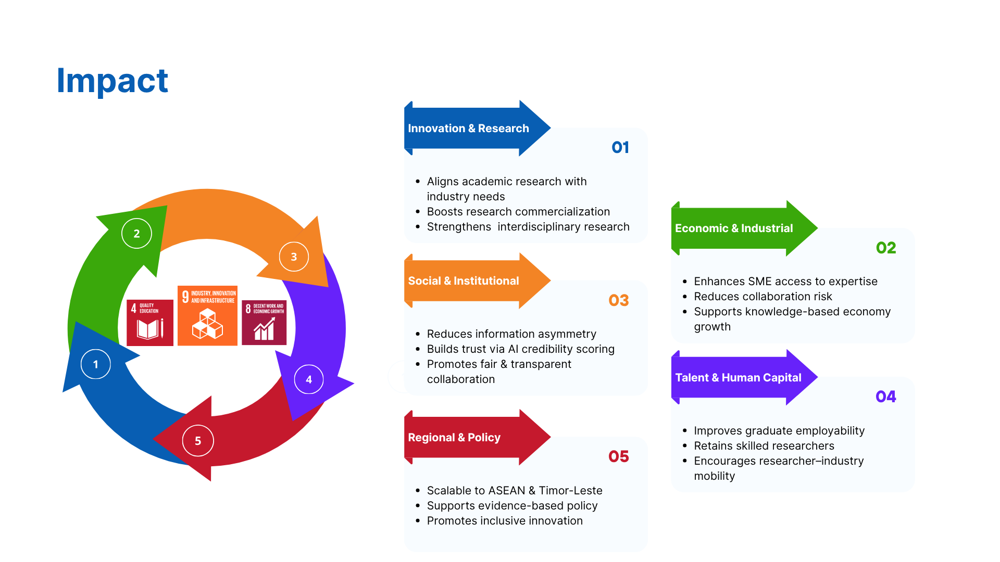
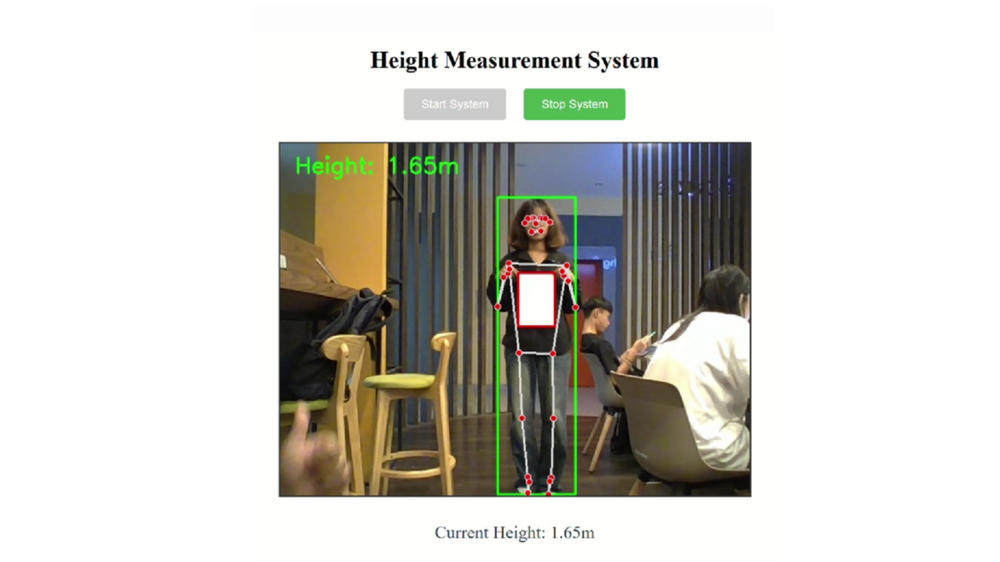

FEATURED WORK
Projects & Builds


BIG DATA
Energy Consumption Analysis for Drone Delivery
Analyzed and predicted energy consumption of drones during package delivery missions
using big data processing pipelines and statistical modeling.
Python
Big Data
Pandas
Matplotlib
↗
.png)

AI / DATA SCIENCE
AI Debugging Assistant
Automatically detects, explains, and fixes bugs in source code using a LangGraph
multi-agent pipeline with LLM reasoning.
Python
LangGraph
LLMs
Agentic AI
↗


ROBOTICS
Transformable Multi-Modal Robotic System
Transformable hybrid UAV-UGV platform capable of aerial flight, ground locomotion, and
mechanical morphing for visual inspection tasks.
ROS2
Python
C++
PX4
STM32
Deep Learning
Computer Vision
↗


COMPUTER VISION
Automated pH Estimation
Automated pH level estimation of water samples
by analyzing color changes on test strips
Python
OpenCV
KNN
K-means clustering
↗
MACHINE LEARNING
Vision Transformer & MLP-Mixer
Implemented standard Transformer to Supervised Pre-Training for image classification
and
Self-Supervised Pre-Training for segmentation tasks.
PyTorch
ViT
MLP-Mixer
Self-Supervised
↗


AI
AI-Enabled Framework for Strengthening University–Industry Collaboration
The study proposes an AI-enabled UIC system with two stages: a pre-collaboration tool
that matches suitable partners and evaluates their credibility, and a post-collaboration system that
provides structured guidance for implementation.
Recommendation systems
Innovation ecosystems
Credibility assessment
↗

COMPUTER VISION
Height Measurement from a Single Camera View
Developed a computer vision system for measuring height from the single camera
perspective using monocular depth estimation models.
OpenCV
NumPy
Pose Estimation
Object Detection
Flask
↗